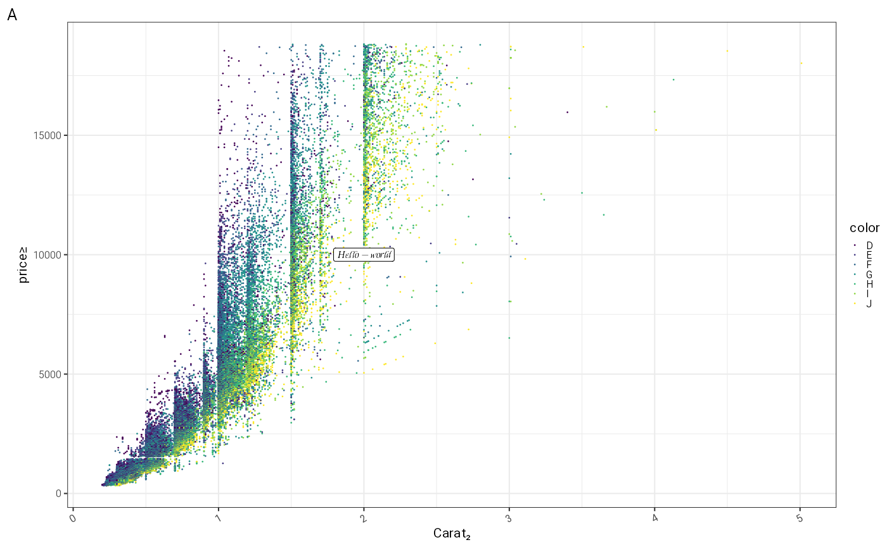
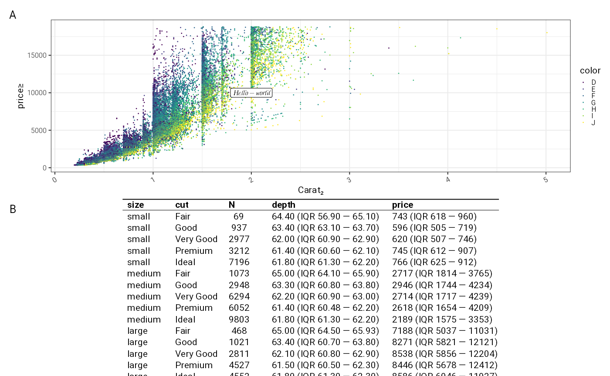
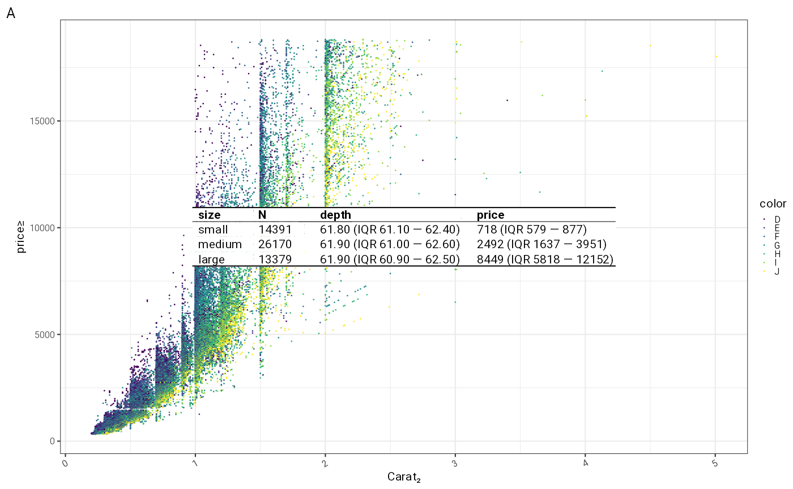

# Setting the dev to ragg_png is important
knitr::opts_chunk$set(
collapse = TRUE,
comment = "#>",
dev = "ragg_png"
)
library(tidyverse)## ── Attaching core tidyverse packages ──────────────────────── tidyverse 2.0.0 ──
## ✔ dplyr 1.1.4 ✔ readr 2.1.5
## ✔ forcats 1.0.0 ✔ stringr 1.5.1
## ✔ ggplot2 3.5.1 ✔ tibble 3.2.1
## ✔ lubridate 1.9.3 ✔ tidyr 1.3.1
## ✔ purrr 1.0.2
## ── Conflicts ────────────────────────────────────────── tidyverse_conflicts() ──
## ✖ dplyr::filter() masks stats::filter()
## ✖ dplyr::lag() masks stats::lag()
## ℹ Use the conflicted package (<http://conflicted.r-lib.org/>) to force all conflicts to become errors
library(patchwork)
library(ggrrr)
out = outputter(normalizePath(tempdir(), mustWork = FALSE),datedFile = FALSE,datedSubdirectory = FALSE)## directing output to: /tmp/RtmpXQ5QHzOpinionated defaults for figures
ggrrr sets a default theme and overrides default line
sizes and text sizes to base figures around 8pt sans serif labels.
ggrrr::gg_pedantic()
plot = ggplot(diamonds, aes(x=carat,y=price,color = color))+
geom_point()+annotate("label",x=2,y=10000,label="Hello \u2014 world", family="Kings")+labs(tag = "A")+xlab("Carat\u2082")+ylab("price\u2265")
plot
There are utility functions to switch off various bits of the plot
plot+gg_hide_X_axis()+gg_hide_Y_axis()+gg_hide_legend()
to control the legend size, arrange the plot to fit a narrower space and put a watermark in the plot
plot+gg_narrow()+gg_resize_legend(spaceLegend = 1,pointSize = 4,textSize = 12)+gg_watermark("PRELIM")
Tabular data in ggplots
A simple table as a ggplot grob makes it easier to combine plots and tables. This simple table has very little control on the output.
tableExample = diamonds %>%
mutate(size = cut(carat, breaks=c(-Inf,quantile(carat, probs = c(0.25,0.75)),Inf), labels=c("small","medium","large")) %>% as.factor()) %>%
group_by(size,cut) %>%
summarise(
N = n(),
depth = sprintf_list("%1.2f (IQR %1.2f \u2014 %1.2f)", quantile(depth,c(0.5,0.25,0.75))),
price = sprintf_list("%1.0f (IQR %1.0f \u2014 %1.0f)", quantile(price,c(0.5,0.25,0.75)))
)
#> `summarise()` has grouped output by 'size'. You can override using the
#> `.groups` argument.
tbl = tableExample %>% gg_simple_table(font = "Roboto")
p2 = plot+tbl+labs(tag = "B")+patchwork::plot_layout(ncol=1)
p2
Fixed sizes for save
Previewing ggplots in RStudio resizes the plot to fit the windows,
scaling the labels independently of the plot. This is annoying when you
are designing a plot for publication and the label sizes change with the
size of the overall image. ggrrr can force ggplot to render
it at the size it will be printed at. In doing so it produces both a PNG
and PDF output which will be (very nearly) identical. It also by default
saves an .Rdata of the ggplot object allowing later adjustment.
f = out("figure1")
tmp = p2 %>% gg_save_as(out("figure1"),size = std_size$two_third)
as.character(tmp)
#> [1] "a ggplot with 3 outputs:" "svg: /tmp/RtmpXQ5QHz/figure1.svg"
#> [3] "pdf: /tmp/RtmpXQ5QHz/figure1.pdf" "png: /tmp/RtmpXQ5QHz/figure1.png"In general journals don’t like this mixture of figures and tables however simple tables are also good to add as annotations to a plot. For this annotating an unwrapped grob is needed e.g.:
tableExample2 = diamonds %>%
mutate(size = cut(carat, breaks=c(-Inf,quantile(carat, probs = c(0.25,0.75)),Inf), labels=c("small","medium","large")) %>% as.factor()) %>%
group_by(size) %>%
summarise(
N = n(),
depth = sprintf_list("%1.2f (IQR %1.2f \u2014 %1.2f)", quantile(depth,c(0.5,0.25,0.75))),
price = sprintf_list("%1.0f (IQR %1.0f \u2014 %1.0f)", quantile(price,c(0.5,0.25,0.75)))
)
tbl2 = tableExample2 %>% gg_simple_table(font = "Roboto",unwrapped = TRUE)
plot+annotation_custom(tbl2)
laying these tables out is tricky, and is worth looking at the
ggpp package for assistance.
Scaling tables to fit
A more complex tabular layout can be achieved which auto scales text to fit the specific dimensions provided.
# tableExample %>% as.long_format_table(fontName = "Times New Roman",fontSize = 12) %>% glimpse()
# tablePlot = tableExample %>% gg_formatted_table(tableWidthInches = 4,font = "Roboto",fontSize = 8)
# tablePlot %>% gg_save_as(tempfile(),maxWidth = 4)
# colwidths not being populated in as.long_format_table